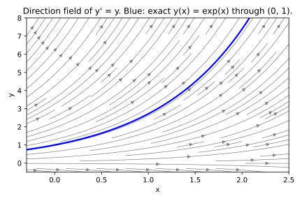

import numpy as np
import matplotlib.pyplot as plt
xs = np.linspace(-0.3, 2.5, 30)
ys = np.linspace(-0.5, 8.0, 30)
X, Y = np.meshgrid(xs, ys)
U = np.ones_like(X)
V = Y
fig, ax = plt.subplots(figsize=(6, 4))
ax.streamplot(X, Y, U, V, density=1.2, color='gray', linewidth=0.7, arrowsize=1.0)
xc = np.linspace(-0.3, 2.5, 200)
ax.plot(xc, np.exp(xc), color='blue', linewidth=2.2)
ax.set_xlabel('x'); ax.set_ylabel('y')
ax.set_xlim(-0.3, 2.5); ax.set_ylim(-0.5, 8.0)
ax.set_title("Direction field of y' = y. Blue: exact y(x) = exp(x) through (0, 1).")
fig.tight_layout()
fig.savefig("01_Historical_Background/direction-field.pdf")
fig.savefig("01_Historical_Background/direction-field.svg")
plt.close(fig)1 The Problem That Launched a Century of Mathematics
1.1 The World Before Numerical Methods
By the mid-eighteenth century, the language of differential equations had become the natural vocabulary of natural philosophy. Newton’s laws of motion, formulated in the previous century, described how quantities change — position, velocity, current, temperature — not by giving their values directly, but by relating a quantity to its own rate of change. The differential equation was the fundamental object. Its solution was a function, and finding that function was the central problem of mathematical physics.
The simplest form of this problem is the first-order initial value problem: given a function \(f\) that specifies the slope of \(y\) at every point \((x, y)\), and a starting value \(y(x_0) = y_0\), find the function \(y(x)\) whose slope everywhere agrees with \(f\) and which passes through the given starting point. In mathematical notation:
\[\frac{dy}{dx} = f(x, y), \quad y(x_0) = y_0\]
The difficulty is that this problem has a clean, closed-form solution only for a narrow class of functions \(f\). When \(f\) is linear in \(y\), or separable, or has certain special symmetry, the equation can be solved analytically — transformed into an explicit formula for \(y(x)\) in terms of familiar functions. Most equations arising in practice do not fall into any of these categories. An equation as apparently innocent as \(dy/dx = \sin(x \cdot y)\), or the equation governing a pendulum with friction, has no solution that can be written in closed form. The function \(y(x)\) exists mathematically — it can be proved to be unique given an initial condition — but it cannot be expressed in terms of polynomials, exponentials, or trigonometric functions.
A direction field makes the problem concrete. At each point in the \((x, y)\) plane, we draw a short arrow with slope \(f(x, y)\). Any solution to the differential equation must be a curve that is tangent to every arrow it passes through. The figure below shows the direction field for the particularly simple equation \(y' = y\), in which the slope at each point equals the current value of \(y\). The blue curve is the exact solution passing through \((0, 1)\).

The equation \(y' = y\) happens to belong to the special class that can be solved analytically: its solution is \(y(x) = C \cdot e^x\) for any constant \(C\). With the initial condition \(y(0) = 1\), the constant is \(C = 1\), giving \(y(x) = e^x\). This is an exception. The overwhelming majority of differential equations arising in astronomy, mechanics, fluid dynamics, and heat conduction cannot be solved by any algebraic manipulation, however ingenious.
The practical response, throughout the eighteenth and nineteenth centuries, was to compute. If an exact formula cannot be found, an approximation can be constructed step by step, using the differential equation itself as a guide. This idea — that a differential equation defines a direction at each point, and that following those directions in small increments traces the solution — is the conceptual foundation of every numerical method we will study in this book. Euler was the first to state it precisely.
1.2 Leonhard Euler and the First Numerical Approach (1768)
Leonhard Euler (1707–1783) was the most prolific mathematician of the eighteenth century. He published over eight hundred papers and books, making foundational contributions to analysis, number theory, graph theory, mechanics, and optics — often while functionally blind in one or both eyes. His three-volume Institutiones Calculi Integralis, published between 1768 and 1770, is the systematic treatise on the integral calculus and differential equations in which the numerical stepping method now known as Euler’s method first appears.
The method rests on a single observation. Suppose we want to find the value of \(y\) at a point \(x_1 = x_0 + h\), a small step \(h\) ahead of the starting point. We do not know the exact value \(y(x_0 + h)\), but we do know the slope at \(x_0\): it is \(f(x_0, y_0)\), given directly by the differential equation. If \(h\) is small, the function \(y\) changes by approximately \(h\) times its slope at the starting point:
\[y_1 \approx y_0 + h \cdot f(x_0, y_0)\]
We then use \(y_1\) as the new starting value, compute \(f(x_1, y_1)\), and step forward again. Repeating this process, the general update rule is:
\[y_{n+1} = y_n + h \cdot f(x_n, y_n)\]
This is Euler’s method. Each step requires exactly one evaluation of \(f\), at the left endpoint of the interval \([x_n, x_{n+1}]\). The slope is treated as constant across the entire step, which is an approximation: the actual slope of \(y\) varies continuously across the interval, but we use only its value at the left endpoint. This approximation introduces a local error at each step, and the errors accumulate across many steps.
Euler’s method is said to be first-order accurate: the total error over a fixed interval shrinks proportionally to \(h\) as the step size decreases. Halving the step size approximately halves the error. This sounds promising, but consider what it means in practice: to gain one extra decimal digit of accuracy, you must reduce \(h\) by a factor of ten — and ten times as many steps means ten times as much computation. For moderate accuracy over short intervals, Euler’s method is entirely adequate. For the precision demanded by nineteenth-century astronomy, or by modern engineering simulation, it is not. The search for more accurate methods motivated everything that followed.
1.3 Carl Runge and the Search for Accuracy (1895)
Carl Runge (1856–1927) was a German mathematician and physicist with a practical orientation. He made important contributions to spectroscopy, numerical methods, and applied mathematics, and spent much of his career at the University of Göttingen, which was then the center of world mathematics. His 1895 paper in Mathematische Annalen — “Über die numerische Auflösung von Differentialgleichungen” (On the numerical solution of differential equations) — introduced a family of methods that became the foundation of modern ODE solving.
Runge’s central observation was that Euler’s method uses only one evaluation of \(f\) per step, at the left endpoint. The inaccuracy arises because the slope at the left endpoint is not representative of the average slope across the whole interval. A better estimate could be obtained by evaluating \(f\) at an additional point within the step — not by computing derivatives of \(f\) (which would require differentiating the function analytically, potentially at great effort), but by simply calling \(f\) at a second, carefully chosen location.
The key difficulty is that to evaluate \(f\) at an interior point \(x_n + \alpha h\), you need the value of \(y\) at that point — which you do not have exactly. Runge’s solution was to use a preliminary Euler step to estimate \(y\) at the intermediate location, and then evaluate \(f\) there. This gives a much better estimate of the average slope across the step than using the left endpoint alone.
The resulting family of methods — methods that achieve higher accuracy by evaluating \(f\) at multiple points per step, without computing any derivatives of \(f\) — are called explicit Runge-Kutta methods. Runge identified several such methods at second order, depending on where the second evaluation is placed. Different choices of sampling location lead to different methods (the midpoint method, Heun’s method, and others), but all share the same accuracy: the total error over a fixed interval shrinks proportionally to \(h^2\) as \(h\) decreases. Halving the step size reduces the error by a factor of four. We will derive all of these in Chapter 5.
The name “Runge-Kutta” honors both Runge’s foundational insight and the systematic generalization that Martin Kutta published six years later.
1.4 Wilhelm Kutta’s Generalization (1901)
Martin Wilhelm Kutta (1867–1944) was a German mathematician whose most enduring contribution is the fourth-order method that bears his name alongside Runge’s. His 1901 paper, “Beitrag zur näherungsweisen Integration totaler Differentialgleichungen” (Contribution to the approximate integration of ordinary differential equations), extended Runge’s approach into a systematic theory.
Where Runge had found specific second-order methods by construction, Kutta asked a more fundamental question: given a general \(s\)-stage method that evaluates \(f\) at \(s\) different points per step, what conditions must the sampling locations and weights satisfy so that the method is accurate to order \(p\) in \(h\)? The answer requires matching the Taylor expansion of the exact solution \(y(x_n + h)\) to the Taylor expansion of the numerical scheme, power of \(h\) by power of \(h\). Each matched power produces an algebraic constraint — an order condition — that the method’s coefficients must satisfy. We will derive these conditions systematically in Chapters 5 through 7.
Kutta derived the order conditions for \(p = 1, 2, 3\), and \(4\). His analysis showed that four evaluations of \(f\) per step are sufficient to achieve fourth-order accuracy — but only if the coefficients satisfy all eight of the resulting constraints simultaneously. The classical method that satisfies these constraints uses the following four slope evaluations:
\[k_1 = f(x_n, y_n)\]
\[k_2 = f\!\left(x_n + \tfrac{h}{2},\ y_n + \tfrac{h}{2}\, k_1\right)\]
\[k_3 = f\!\left(x_n + \tfrac{h}{2},\ y_n + \tfrac{h}{2}\, k_2\right)\]
\[k_4 = f(x_n + h,\ y_n + h \cdot k_3)\]
These four values are then combined into a weighted average that advances \(y\) by one step:
\[y_{n+1} = y_n + \frac{h}{6}\,(k_1 + 2 k_2 + 2 k_3 + k_4)\]
The weights \(1/6, 1/3, 1/3, 1/6\) are not an arbitrary choice. They are the unique consequence of requiring the method to be fourth-order accurate with this particular sampling structure: two endpoint evaluations weighted \(1/6\) each, and two midpoint evaluations weighted \(1/3\) each. This echoes the structure of Simpson’s rule for numerical integration, which similarly weights the endpoints less than the interior. We will derive exactly why these weights emerge — and why they could not be anything else — in Chapter 7.
Kutta’s analysis also clarified why this method is as far as one can go without a significant increase in complexity. For fifth-order accuracy, the number of order conditions jumps to 17. For sixth order, it reaches 37. The number of conditions grows far faster than the number of available free parameters, which means that beyond fourth order, the number of required stages exceeds the order of accuracy. This phenomenon — called the Butcher barrier after the New Zealand mathematician who formalized it in the 1960s — explains why RK4 became the standard method for over a century, and why no higher-order explicit method has displaced it in general use. Chapter 9 examines this in detail.
1.5 Why This History Still Matters
The historical development of Runge-Kutta methods is not a preamble to the real material of this book — it is a map of the logical terrain. Each step in the history was forced by a specific limitation of the step before it. Euler’s method emerged because differential equations could not, in general, be solved analytically. Runge’s second-order methods emerged because Euler’s error was too large for practical use without prohibitively small steps. Kutta’s systematic theory emerged because Runge had found methods without explaining the conditions that made them work, or how to construct higher-order variants.
This book follows exactly the same logical chain. We begin, as Euler did, with the Taylor series: the exact mathematical tool that relates a function’s value at \(x + h\) to its values and derivatives at \(x\). From the Taylor series, Euler’s method emerges as the simplest consistent stepping scheme (Chapter 4). Adding a second evaluation point introduces new parameters and new constraints, and the midpoint method and Heun’s method fall out from the same constraint system (Chapter 5). The pattern continues through RK3 (Chapter 6) and RK4 (Chapter 7).
At each stage, the question is identical: what must the method’s coefficients satisfy so that its Taylor expansion matches the exact solution’s Taylor expansion through the term in \(h^p\)? The answer is the set of order conditions. Satisfying them is the derivation. The specific numerical values — the \(1/6, 1/3, 1/3, 1/6\) weights of RK4 — are not given in advance but derived, as the unavoidable consequence of constraints we construct from first principles.
Python will serve as the derivation engine throughout. Rather than expand Taylor series by hand — a task that becomes unmanageable by the time we reach four stages — we will use SymPy’s symbolic algebra to expand, collect terms, and extract order conditions automatically. This is exactly how a working numerical analyst would approach the derivation today, and it is more honest than pretending the algebra is tractable by hand. The Python tools (SymPy for symbolic work, NumPy and SciPy for numerics, matplotlib for plotting) are introduced exactly when they first become necessary, with each command explained before it is used.
By the end of Chapter 7, you will have derived RK4 yourself — not memorized it, but derived it — from the Taylor series, through the order conditions, to the final formula. The weights \(1/6, 1/3, 1/3, 1/6\) will be the inevitable output of a system of equations you constructed, not numbers someone handed you. That is the goal of this book.